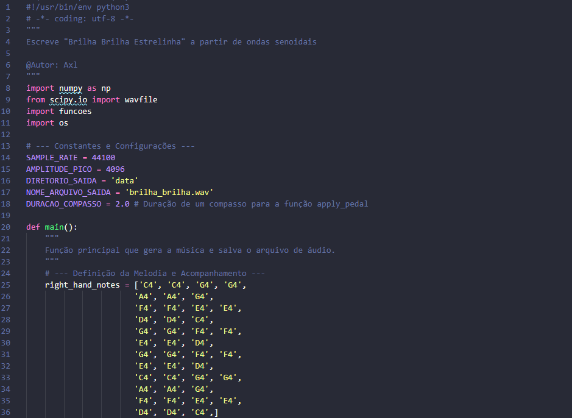

Math AI Tutor
Tutor educacional de Matemática e Física integrando modelos OpenAI, raciocínio passo a passo, detecção contextual de assuntos e memória curta de sessão.
Vitrine técnica e científica
Aplicações que conectam a trajetória acadêmica a implementações reais: IA generativa educacional, provadores formais, síntese computacional de áudio, heurísticas evolutivas em redes e jogos estáticos.
Tutor educacional de Matemática e Física integrando modelos OpenAI, raciocínio passo a passo, detecção contextual de assuntos e memória curta de sessão.

Produção técnica registrada no Currículo Lattes: sintetizador de áudio que correlaciona séries de Fourier, geração de timbres harmônicos e notas musicais via Python.

Apresentação acadêmica e simulação focada na otimização do fluxo de dados em redes ad hoc com múltiplos caminhos simultâneos, comparando convergência e balanceamento de carga.
Coleção estática de minijogos de palavras em português (estilo Termooo, Contexto e Conexo) otimizada para jogar cooperativamente a dois, sem necessidade de infraestrutura de backend.
Provador simbólico de teoremas inspirado no General Problem Solver (GPS), com geração de deduções passo a passo para lógica proposicional e regras de limites na reta real.
Vamos conversar?
Propostas de pesquisa acadêmica, docência, desenvolvimento de projetos ou palestras.